Tank stats
The Best Performing Tanks
Relative WR
The graph shows the tanks with the highest Relative WR. That is the average of players’ WR in a tank compared to their average WR at the tier (in all same tier tanks). Relative WR is a measure of the performance/strength of the tank.
- All the statistics are about battles fought during the update 6.5 only.
- The impact of “Stock-grind battles” is reduced based on tier-specific requirement for total battles at the end of the update. Only players with more than 0-152 (depending on the tier) battles in a tank in the end of the update are included to eliminate the impact of the first battles in the tank (with sub-100% crew / modules).
- The players need to have 10-20 battles in a tank and 20-40 battles at the tier during the update.
- Average WR is the players’s average WR in the tank
- Player WR at Tier is the average WR of the players of the tank at the tier. Since different tiers have different difficulty, it is more meaningful to compare players’ performance in the same tier tanks.
- Only tanks with more than 400 players are listed. This may filter out few upcoming tanks that are being tested.
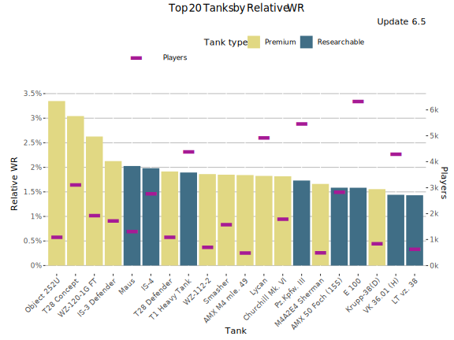
Highest Relative WR - Table
| Tank | Relative WR | Average WR | Player WR at Tier | Players | Battles/Player | Tank type |
|---|---|---|---|---|---|---|
| Object 252U | 3.34% | 58.2% | 54.9% | 1 003 | 70 | Premium |
| T28 Concept | 3.03% | 57.2% | 54.2% | 2 802 | 61 | Premium |
| WZ-120-1G FT | 2.63% | 59.8% | 57.2% | 1 837 | 75 | Premium |
| IS-3 Defender | 2.18% | 57.1% | 54.9% | 1 367 | 81 | Premium |
| T1 Heavy Tank | 2.15% | 55.6% | 53.4% | 2 249 | 76 | Researchable |
| Maus | 2.12% | 54.8% | 52.7% | 1 129 | 61 | Researchable |
| IS-4 | 2.11% | 53.7% | 51.6% | 2 393 | 65 | Researchable |
| Pz.Kpfw. III | 2.11% | 58.3% | 56.2% | 1 499 | 76 | Researchable |
| AMX M4 mle. 49 | 2.07% | 57.6% | 55.5% | 418 | 54 | Premium |
| T28 Defender | 2.03% | 55.2% | 53.2% | 983 | 63 | Premium |
| Lycan | 1.98% | 56.2% | 54.2% | 4 187 | 57 | Premium |
| Smasher | 1.9% | 60.5% | 58.6% | 1 470 | 114 | Premium |
| VK 36.01 (H) | 1.87% | 54.1% | 52.3% | 2 747 | 69 | Researchable |
| Durchbruchswagen 2 | 1.85% | 59.9% | 58% | 498 | 92 | Premium |
| WZ-112-2 | 1.82% | 55.7% | 53.9% | 608 | 55 | Premium |
| Churchill Mk. VI | 1.74% | 56.1% | 54.4% | 1 668 | 59 | Premium |
| E 100 | 1.73% | 52.1% | 50.4% | 5 497 | 65 | Researchable |
| Black Prince | 1.62% | 53.5% | 51.9% | 1 792 | 60 | Researchable |
| AMX 50 Foch (155) | 1.61% | 57.2% | 55.6% | 2 716 | 98 | Researchable |
| Tiger II | 1.55% | 52.2% | 50.6% | 4 849 | 64 | Researchable |
Highest Average WR
This graph shows the tanks with the highest average WR during update 6.5. Player WR denotes the tank’s players’ average WR across all the tanks during the update.
- Only battles in maxed-out tanks are taken into account. It is assumed that a tank is maxed out if it is a) premium tank or b) player has more than certain number of battles in it in the end of the update (tier dependent: Tier I: 0 battles, Tier X: 152 battles.
- Since the data is fetched once per update, the stats for just released new Tech-Tree tanks is lower than it should be since the battles players ground the tanks from stock are included in the average.
- On the other hand new high tier tanks are often ground first by more active and also better players that distorts the average WR.
- Only tanks with more than 400 players are listed. This may filter out few upcoming tanks that are being tested.
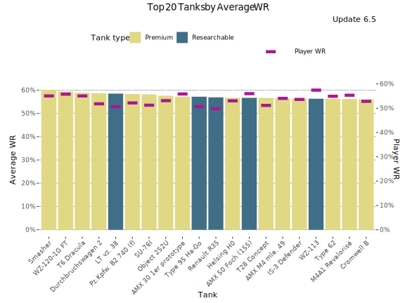
Highest Average WR - Table
Average WR denotes average WR in a tank across all the players during the update. Player WR denotes the tank’s players’ average WR across all the tanks during the update.
| Tank | Average WR | Player WR | Players | Battles/Player | Tank type |
|---|---|---|---|---|---|
| LT vz. 38 | 62.7% | 53.2% | 460 | 37 | Researchable |
| Smasher | 60.5% | 55.6% | 1 658 | 110 | Premium |
| Durchbruchswagen 2 | 60.1% | 52.3% | 793 | 79 | Premium |
| BT-2 | 59.9% | 51.5% | 520 | 44 | Researchable |
| WZ-120-1G FT | 59.8% | 56.2% | 1 944 | 75 | Premium |
| T6 Dracula | 59.5% | 55.7% | 2 877 | 82 | Premium |
| T-26 | 59% | 51.2% | 465 | 38 | Researchable |
| Cruiser Mk. II | 58.9% | 50.7% | 475 | 41 | Researchable |
| Pz.Kpfw. III | 58.8% | 51% | 2 295 | 68 | Researchable |
| Object 252U | 58.1% | 53.8% | 1 058 | 69 | Premium |
| AMX 30 1er prototype | 57.8% | 56.5% | 1 581 | 65 | Premium |
| AMX M4 mle. 49 | 57.7% | 55% | 435 | 55 | Premium |
| M2 Light Tank | 57.3% | 49.9% | 401 | 40 | Researchable |
| Type 62 | 57.3% | 55.9% | 4 828 | 61 | Premium |
| Cromwell B | 57.2% | 53.7% | 4 399 | 58 | Premium |
| T28 Concept | 57.2% | 51.8% | 3 169 | 60 | Premium |
| Krupp-38(D) | 57.2% | 52.2% | 656 | 63 | Premium |
| Helsing H0 | 57.1% | 53.5% | 3 441 | 76 | Premium |
| IS-3 Defender | 57% | 54.3% | 1 471 | 81 | Premium |
| AMX 50 Foch (155) | 56.9% | 56.4% | 2 924 | 97 | Researchable |
Highest Average Damage (tier-for-tier)
This graph shows the tanks with the highest average damage vs tier average during update 6.5. For the overall highest average damage chart, please see Tier X Average Damage rankings.
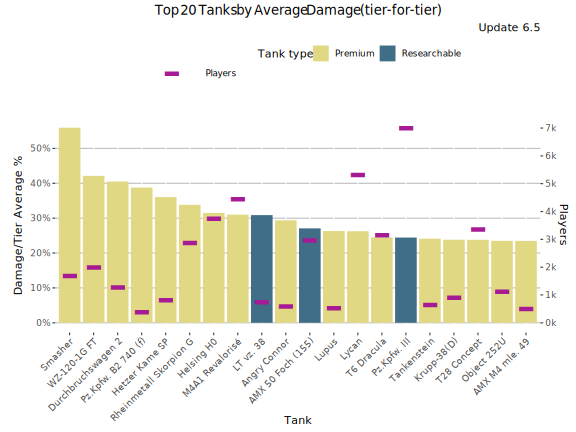
Highest Average Damage (tier-for-tier) - Table
| Tank | Damage/Tier Average % | Average WR | Average Damage | Players | Tier | Vehicle Class | Tank type |
|---|---|---|---|---|---|---|---|
| Smasher | 47.4% | 60.4% | 1 537 | 1 658 | 7 | Heavy Tank | Premium |
| Durchbruchswagen 2 | 37.7% | 59% | 577 | 793 | 4 | Heavy Tank | Premium |
| WZ-120-1G FT | 34.6% | 59.6% | 1 742 | 1 944 | 8 | Tank Destroyer | Premium |
| LT vz. 38 | 28.7% | 63.4% | 438 | 460 | 2 | Light Tank | Researchable |
| Angry Connor | 28.3% | 53.5% | 756 | 437 | 5 | Tank Destroyer | Premium |
| Rheinmetall Skorpion G | 27.1% | 55% | 1 645 | 2 794 | 8 | Tank Destroyer | Premium |
| M4A1 Revalorisé | 25.5% | 57.3% | 1 624 | 4 347 | 8 | Medium Tank | Premium |
| Helsing H0 | 24.5% | 57.1% | 1 299 | 3 441 | 7 | Tank Destroyer | Premium |
| T1 Heavy Tank | 23.5% | 56.1% | 728 | 2 620 | 5 | Heavy Tank | Researchable |
| Krupp-38(D) | 22.8% | 57.1% | 724 | 656 | 5 | Medium Tank | Premium |
| S35 CA | 22.5% | 53.4% | 722 | 1 444 | 5 | Tank Destroyer | Researchable |
| Stridsvagn 74A2 | 21.9% | 55.6% | 1 046 | 1 016 | 6 | Medium Tank | Premium |
| AMX 50 Foch (155) | 21.3% | 57.4% | 2 323 | 2 924 | 10 | Tank Destroyer | Researchable |
| Lycan | 21.2% | 55.9% | 1 264 | 4 713 | 7 | Heavy Tank | Premium |
| BT-2 | 20% | 61.4% | 409 | 520 | 2 | Light Tank | Researchable |
| Pz.Kpfw. III | 19.8% | 58.9% | 501 | 2 295 | 3 | Medium Tank | Researchable |
| Matilda IV | 19.3% | 55.7% | 703 | 633 | 5 | Medium Tank | Premium |
| T6 Dracula | 18.9% | 59.5% | 1 240 | 2 877 | 7 | Medium Tank | Premium |
| T28 Concept | 18.7% | 57.4% | 1 238 | 3 169 | 7 | Tank Destroyer | Premium |
| Tankenstein | 18.4% | 54.5% | 1 234 | 502 | 7 | Heavy Tank | Premium |
Highest Average Kills/Battle
This graph shows the tanks with the most kills per battle on average WR during update 6.5. Player WR denotes the tank’s players’ average WR across all the tanks during the update.
- Only battles in maxed-out tanks are taken into account. It is assumed that a tank is maxed out if it is a) premium tank or b) player has more than certain number of battles in it in the end of the update (tier dependent: Tier I: 0 battles, Tier X: 152 battles.
- Since the data is fetched once per update, the stats for just released new Tech-Tree tanks is lower than it should be since the battles players ground the tanks from stock are included in the average.
- On the other hand new high tier tanks are often ground first by more active and also better players that distorts the stats for those.
- Only tanks with more than 400 players are listed. This may filter out few upcoming tanks that are being tested.
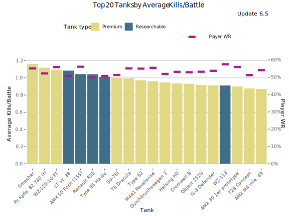
Highest Average Kills/Battle - Table
Average WR denotes average WR in a tank across all the players during the update. Player WR denotes the tank’s players’ average WR across all the tanks during the update.
| Tank | Average Kills/Battle | Average WR | Player WR | Players | Battles/Player | Tank type |
|---|---|---|---|---|---|---|
| LT vz. 38 | 1.20 | 62.7% | 53.2% | 460 | 37 | Researchable |
| Smasher | 1.17 | 60.5% | 55.6% | 1 658 | 110 | Premium |
| Durchbruchswagen 2 | 0.95 | 60.1% | 52.3% | 793 | 79 | Premium |
| BT-2 | 1.13 | 59.9% | 51.5% | 520 | 44 | Researchable |
| WZ-120-1G FT | 1.11 | 59.8% | 56.2% | 1 944 | 75 | Premium |
| T6 Dracula | 1.01 | 59.5% | 55.7% | 2 877 | 82 | Premium |
| T-26 | 1.07 | 59% | 51.2% | 465 | 38 | Researchable |
| Cruiser Mk. II | 1.03 | 58.9% | 50.7% | 475 | 41 | Researchable |
| Pz.Kpfw. III | 1.08 | 58.8% | 51% | 2 295 | 68 | Researchable |
| Object 252U | 0.94 | 58.1% | 53.8% | 1 058 | 69 | Premium |
| AMX 30 1er prototype | 0.92 | 57.8% | 56.5% | 1 581 | 65 | Premium |
| AMX M4 mle. 49 | 0.89 | 57.7% | 55% | 435 | 55 | Premium |
| M2 Light Tank | 0.90 | 57.3% | 49.9% | 401 | 40 | Researchable |
| Type 62 | 1.01 | 57.3% | 55.9% | 4 828 | 61 | Premium |
| Cromwell B | 0.97 | 57.2% | 53.7% | 4 399 | 58 | Premium |
| T28 Concept | 0.90 | 57.2% | 51.8% | 3 169 | 60 | Premium |
| Krupp-38(D) | 0.91 | 57.2% | 52.2% | 656 | 63 | Premium |
| Helsing H0 | 0.95 | 57.1% | 53.5% | 3 441 | 76 | Premium |
| IS-3 Defender | 0.93 | 57% | 54.3% | 1 471 | 81 | Premium |
| AMX 50 Foch (155) | 1.05 | 56.9% | 56.4% | 2 924 | 97 | Researchable |
Highest Spot Rate
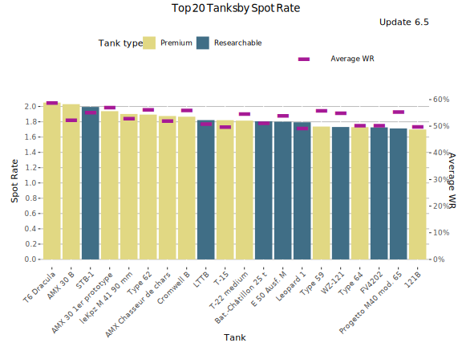
Highest Spot Rate - Table
| Tank | Spot Rate | Average WR | Player WR | Players | Battles/Player | Tank type |
|---|---|---|---|---|---|---|
| T6 Dracula | 2.06 | 59.5% | 55.7% | 2 877 | 82 | Premium |
| AMX 30 B | 2.05 | 53% | 55.3% | 1 233 | 66 | Premium |
| STB-1 | 2.03 | 55.8% | 57.3% | 1 842 | 70 | Researchable |
| AMX 30 1er prototype | 1.96 | 57.8% | 56.5% | 1 581 | 65 | Premium |
| leKpz M 41 90 mm | 1.95 | 54.1% | 56.1% | 797 | 51 | Premium |
| Type 62 | 1.93 | 57.3% | 55.9% | 4 828 | 61 | Premium |
| AMX Chasseur de chars | 1.90 | 52.8% | 54.2% | 4 838 | 61 | Premium |
| Cromwell B | 1.90 | 57.2% | 53.7% | 4 399 | 58 | Premium |
| LTTB | 1.88 | 51.7% | 51.2% | 5 464 | 69 | Researchable |
| T-22 medium | 1.83 | 55.4% | 56.8% | 856 | 59 | Premium |
| E 50 Ausf. M | 1.83 | 54.5% | 55.8% | 3 448 | 67 | Researchable |
| Leopard 1 | 1.82 | 49.7% | 53.3% | 4 312 | 66 | Researchable |
| Bat.-Châtillon 25 t | 1.82 | 51.5% | 54.1% | 4 571 | 63 | Researchable |
| FV4202 | 1.77 | 50.9% | 53.7% | 1 312 | 61 | Researchable |
| Type 59 | 1.76 | 56.6% | 56.1% | 2 880 | 59 | Premium |
| AMX ELC bis | 1.76 | 51.1% | 49.9% | 1 786 | 55 | Researchable |
| Type 64 | 1.75 | 51.1% | 51.3% | 908 | 44 | Premium |
| WZ-121 | 1.75 | 55.3% | 57.1% | 1 534 | 72 | Researchable |
| Spähpanzer Ru 251 | 1.74 | 49.8% | 51.4% | 3 466 | 65 | Researchable |
| VK 28.01 | 1.73 | 53.4% | 51.3% | 4 816 | 76 | Researchable |
Highest Hit Rate
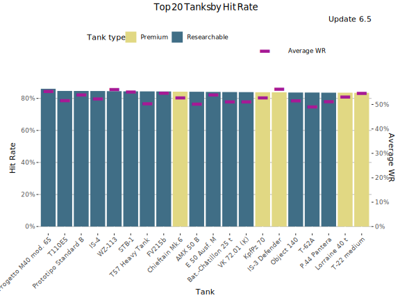
Highest Hit Rate - Table
| Tank | Hit Rate | Average WR | Player WR | Players | Battles/Player | Tank type |
|---|---|---|---|---|---|---|
| Progetto M40 mod. 65 | 86% | 55.7% | 56.8% | 2 399 | 160 | Researchable |
| Prototipo Standard B | 84.7% | 54.3% | 53.6% | 3 919 | 152 | Researchable |
| T110E5 | 84.6% | 52.3% | 53.3% | 1 991 | 61 | Researchable |
| IS-4 | 84.5% | 52.8% | 52.2% | 2 912 | 67 | Researchable |
| WZ-113 | 84.5% | 56.6% | 57.9% | 994 | 58 | Researchable |
| STB-1 | 84.4% | 55.8% | 57.3% | 1 842 | 70 | Researchable |
| T57 Heavy Tank | 84.3% | 50.6% | 51.6% | 5 780 | 73 | Researchable |
| Chieftain Mk.6 | 84.3% | 53.5% | 55.7% | 2 316 | 54 | Premium |
| FV215b | 84.3% | 55.5% | 56.5% | 1 511 | 64 | Researchable |
| AMX 50 B | 84.1% | 50.6% | 51.2% | 3 864 | 74 | Researchable |
| KpfPz 70 | 84.1% | 53.5% | 53.2% | 4 690 | 52 | Premium |
| E 50 Ausf. M | 84% | 54.5% | 55.8% | 3 448 | 67 | Researchable |
| Bat.-Châtillon 25 t | 84% | 51.5% | 54.1% | 4 571 | 63 | Researchable |
| IS-3 Defender | 83.9% | 57% | 54.3% | 1 471 | 81 | Premium |
| VK 72.01 (K) | 83.9% | 51.4% | 52% | 1 242 | 62 | Researchable |
| Lorraine 40 t | 83.7% | 54.1% | 54.2% | 481 | 59 | Premium |
| T-22 medium | 83.7% | 55.4% | 56.8% | 856 | 59 | Premium |
| P.44 Pantera | 83.7% | 51.6% | 52% | 7 783 | 100 | Researchable |
| Object 140 | 83.6% | 52.1% | 54.4% | 3 787 | 68 | Researchable |
| M6A2E1 EXP | 83.5% | 53.3% | 52.3% | 8 670 | 70 | Premium |
Most Popular Tanks
This graph shows the most popular tanks by the number of players during the update 6.5.
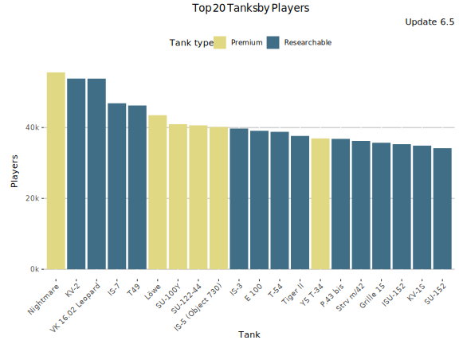
Most popular Tanks - Table
| Tank | Players | Average WR | Battles/Player | Tank type |
|---|---|---|---|---|
| KV-2 | 46 243 | 51.9% | 19 | Researchable |
| Nightmare | 46 072 | 52.8% | 12 | Premium |
| IS-7 | 44 600 | 52.2% | 16 | Researchable |
| T49 | 43 986 | 51.5% | 33 | Researchable |
| Löwe | 40 750 | 53.7% | 22 | Premium |
| VK 16.02 Leopard | 39 337 | 52.6% | 21 | Researchable |
| IS-5 (Object 730) | 38 794 | 56.2% | 14 | Premium |
| E 100 | 37 452 | 53.1% | 20 | Researchable |
| SU-122-44 | 37 445 | 53.3% | 14 | Premium |
| SU-100Y | 36 524 | 54.8% | 19 | Premium |
| T-54 | 36 011 | 52.8% | 22 | Researchable |
| IS-3 | 34 816 | 52.1% | 18 | Researchable |
| Grille 15 | 34 587 | 49.7% | 27 | Researchable |
| Tiger II | 33 308 | 52.8% | 20 | Researchable |
| Y5 T-34 | 32 201 | 56.5% | 11 | Premium |
| ISU-152 | 32 115 | 50.9% | 28 | Researchable |
| T-62A | 30 886 | 50.5% | 17 | Researchable |
| Waffenträger auf Pz. IV | 30 840 | 52.6% | 52 | Researchable |
| FV215b (183) | 30 543 | 49.1% | 30 | Researchable |
| T57 Heavy Tank | 30 439 | 52.5% | 22 | Researchable |
Most played tanks
This graph shows the most played tanks by number of battles during the update 6.5.
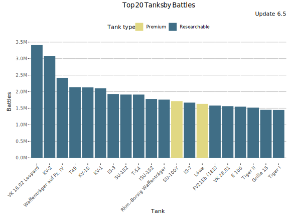
Most Played Tanks - Table
| Tank | Battles | Average WR | Players | Battles/Player | Tank type |
|---|---|---|---|---|---|
| Waffenträger auf Pz. IV | 1 600k | 52.6% | 30 840 | 52 | Researchable |
| T49 | 1 500k | 51.5% | 43 986 | 33 | Researchable |
| P.44 Pantera | 1 100k | 52% | 23 554 | 47 | Researchable |
| Rhm.-Borsig Waffenträger | 980k | 51.5% | 30 084 | 33 | Researchable |
| Prototipo Standard B | 960k | 54% | 14 482 | 66 | Researchable |
| Grille 15 | 940k | 49.7% | 34 587 | 27 | Researchable |
| FV215b (183) | 920k | 49.1% | 30 543 | 30 | Researchable |
| Löwe | 900k | 53.7% | 40 750 | 22 | Premium |
| ISU-152 | 890k | 50.9% | 32 115 | 28 | Researchable |
| KV-2 | 890k | 51.9% | 46 243 | 19 | Researchable |
| VK 16.02 Leopard | 830k | 52.6% | 39 337 | 21 | Researchable |
| SU-152 | 810k | 53.1% | 29 999 | 27 | Researchable |
| T-54 | 810k | 52.8% | 36 011 | 22 | Researchable |
| E 100 | 740k | 53.1% | 37 452 | 20 | Researchable |
| M6A2E1 EXP | 740k | 55.4% | 29 475 | 25 | Premium |
| IS-7 | 700k | 52.2% | 44 600 | 16 | Researchable |
| SU-100Y | 690k | 54.8% | 36 524 | 19 | Premium |
| T57 Heavy Tank | 670k | 52.5% | 30 439 | 22 | Researchable |
| Tiger II | 660k | 52.8% | 33 308 | 20 | Researchable |
| Progetto M40 mod. 65 | 640k | 55% | 10 927 | 58 | Researchable |
Lowest Performing Tanks
Lowest Relative WR
The graph shows the tanks with the lowest Relative WR. That is the average of players’ WR in a tank compared to their average WR at the tier (in all same tier tanks). Relative WR is a measure of the performance/strength of the tank.
- All the statistics are about battles fought during the update 6.5 only.
- The impact of “Stock-grind battles” is reduced based on tier-specific requirement for total battles at the end of the update. Only players with more than 0-152 (depending on the tier) battles in a tank in the end of the update are included to eliminate the impact of the first battles in the tank (with sub-100% crew / modules).
- The players need to have 10-20 battles in a tank and 20-40 battles at the tier during the update.
- Average WR is the players’s average WR in the tank
- Player WR at Tier is the average WR of the players of the tank at the tier. Since different tiers have different difficulty, it is more meaningful to compare players’ performance in the same tier tanks.
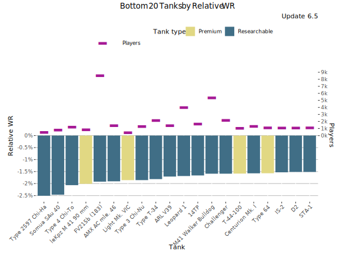
Lowest Relative WR - Table
| Tank | Relative WR | Average WR | Player WR at Tier | Players | Battles/Player | Tank type |
|---|---|---|---|---|---|---|
| Type T-34 | -2.19% | 49% | 51.2% | 1 031 | 44 | Researchable |
| Type 4 Chi-To | -2.1% | 49.2% | 51.3% | 690 | 51 | Researchable |
| 14TP | -2.09% | 49.2% | 51.2% | 535 | 31 | Researchable |
| AMX AC mle. 46 | -2.05% | 48.5% | 50.5% | 984 | 65 | Researchable |
| FV215b (183) | -2.03% | 48.9% | 50.9% | 7 815 | 80 | Researchable |
| leKpz M 41 90 mm | -1.98% | 54.2% | 56.2% | 770 | 51 | Premium |
| Type 3 Chi-Nu | -1.91% | 49.5% | 51.4% | 574 | 46 | Researchable |
| ARL V39 | -1.9% | 49.5% | 51.4% | 911 | 53 | Researchable |
| T-44-100 | -1.85% | 50.8% | 52.6% | 774 | 55 | Premium |
| Challenger | -1.85% | 48.1% | 49.9% | 1 638 | 53 | Researchable |
| Cruiser Mk. IV | -1.8% | 49.4% | 51.2% | 597 | 59 | Researchable |
| IS-2 | -1.78% | 48.1% | 49.9% | 782 | 55 | Researchable |
| Leopard 1 | -1.77% | 50.5% | 52.3% | 3 613 | 63 | Researchable |
| Type 5 Chi-Ri | -1.73% | 48.7% | 50.5% | 911 | 61 | Researchable |
| Centurion Mk. I | -1.68% | 46.8% | 48.5% | 885 | 62 | Researchable |
| STA-1 | -1.65% | 48.1% | 49.8% | 789 | 65 | Researchable |
| M41 Walker Bulldog | -1.64% | 49.3% | 51% | 3 946 | 70 | Researchable |
| Panther II | -1.62% | 47.5% | 49.1% | 1 211 | 67 | Researchable |
| Type 64 | -1.6% | 51.2% | 52.8% | 800 | 44 | Premium |
| SU-101 | -1.57% | 48.4% | 50% | 949 | 63 | Researchable |
Lowest Average WR
This graph shows the tanks with the lowest average WR during update 6.5. Player WR denotes the tank’s players’ average WR across all the tanks during the update. Only tanks with more than 400 players are listed. This may filter out few upcoming tanks that are being tested.
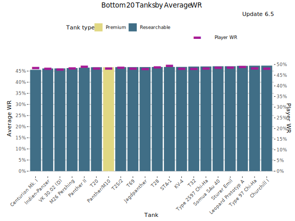
Lowest Average WR - Table
Average WR denotes average WR in a tank across all the players during the update. Player WR denotes the tank’s players’ average WR across all the tanks during the update.
| Tank | Average WR | Player WR | Players | Battles/Player | Tank type |
|---|---|---|---|---|---|
| Centurion Mk. I | 46.4% | 49.1% | 1 089 | 62 | Researchable |
| Indien-Panzer | 46.6% | 48.3% | 851 | 59 | Researchable |
| VK 30.02 (D) | 46.6% | 48% | 426 | 52 | Researchable |
| M26 Pershing | 47.1% | 48.7% | 915 | 63 | Researchable |
| T69 | 47.1% | 48.4% | 1 194 | 68 | Researchable |
| Panther II | 47.2% | 49.5% | 1 431 | 68 | Researchable |
| T28 | 47.2% | 48.8% | 527 | 68 | Researchable |
| KV-4 | 47.4% | 48.3% | 2 036 | 69 | Researchable |
| Panther/M10 | 47.6% | 48.7% | 465 | 77 | Premium |
| T25/2 | 47.7% | 49.1% | 1 592 | 60 | Researchable |
| T20 | 47.7% | 48.8% | 863 | 63 | Researchable |
| STA-1 | 47.7% | 50.2% | 942 | 66 | Researchable |
| Jagdpanther | 47.8% | 48.5% | 2 074 | 58 | Researchable |
| T32 | 47.8% | 48.5% | 1 229 | 63 | Researchable |
| Challenger | 48% | 49.9% | 1 984 | 51 | Researchable |
| IS-2 | 48.1% | 49.9% | 913 | 57 | Researchable |
| Leopard Prototyp A | 48.1% | 49.5% | 2 539 | 76 | Researchable |
| Sturer Emil | 48.2% | 49.2% | 2 662 | 69 | Researchable |
| SU-101 | 48.3% | 50.3% | 1 064 | 64 | Researchable |
| VK 45.02 (P) Ausf. A | 48.3% | 48.7% | 1 236 | 61 | Researchable |
Lowest Average Damage (tier-for-tier)
This graph shows the tanks with the lowest average damage vs tier average during update 6.5.
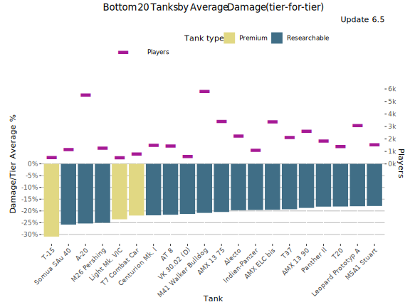
Lowest Average Damage (tier-for-tier) - Table
| Tank | Damage/Tier Average % | Average WR | Average Damage | Players | Tier | Vehicle Class | Tank type |
|---|---|---|---|---|---|---|---|
| Pz.Kpfw. II | -28.3% | 53.3% | 217 | 563 | 1 | Light Tank | Researchable |
| M26 Pershing | -26.3% | 46.9% | 954 | 915 | 8 | Medium Tank | Researchable |
| VK 30.02 (D) | -24.1% | 46.6% | 792 | 426 | 7 | Medium Tank | Researchable |
| Indien-Panzer | -22.7% | 46.3% | 1 001 | 851 | 8 | Medium Tank | Researchable |
| Centurion Mk. I | -22.5% | 46.5% | 1 003 | 1 089 | 8 | Medium Tank | Researchable |
| AMX 13 90 | -21.7% | 48.8% | 1 013 | 2 279 | 8 | Light Tank | Researchable |
| M41 Walker Bulldog | -21.6% | 49.2% | 817 | 4 735 | 7 | Light Tank | Researchable |
| AMX 13 75 | -21.5% | 48.9% | 819 | 2 571 | 7 | Light Tank | Researchable |
| AT 8 | -21.2% | 48.5% | 676 | 877 | 6 | Tank Destroyer | Researchable |
| A-20 | -21% | 51.2% | 331 | 1 186 | 4 | Light Tank | Researchable |
| KV-4 | -20.5% | 47.2% | 1 029 | 2 036 | 8 | Heavy Tank | Researchable |
| Y5 ELC bis | -20.2% | 48.2% | 832 | 1 839 | 7 | Medium Tank | Premium |
| Panther II | -20.2% | 47.5% | 1 033 | 1 431 | 8 | Medium Tank | Researchable |
| Leopard Prototyp A | -19.5% | 48.3% | 1 231 | 2 539 | 9 | Medium Tank | Researchable |
| T37 | -19.4% | 49% | 692 | 1 284 | 6 | Light Tank | Researchable |
| 14TP | -19.3% | 49% | 337 | 1 025 | 3 | Light Tank | Researchable |
| T20 | -19.3% | 47.9% | 842 | 863 | 7 | Medium Tank | Researchable |
| T69 | -18.6% | 46.9% | 1 053 | 1 194 | 8 | Medium Tank | Researchable |
| Panther/M10 | -18.5% | 47.7% | 850 | 465 | 7 | Medium Tank | Premium |
| STA-1 | -18.2% | 47.9% | 1 058 | 942 | 8 | Medium Tank | Researchable |
Lowest Average Kills/Battle
This graph shows the tanks with the most kills per battle on average WR during update 6.5. Player WR denotes the tank’s players’ average WR across all the tanks during the update.
- Only battles in maxed-out tanks are taken into account. It is assumed that a tank is maxed out if it is a) premium tank or b) player has more than certain number of battles in it in the end of the update (tier dependent: Tier I: 0 battles, Tier X: 152 battles.
- Since the data is fetched once per update, the stats for just released new Tech-Tree tanks is lower than it should be since the battles players ground the tanks from stock are included in the average.
- On the other hand new high tier tanks are often ground first by more active and also better players that distorts the stats for those.
- Only tanks with more than 400 players are listed. This may filter out few upcoming tanks that are being tested.
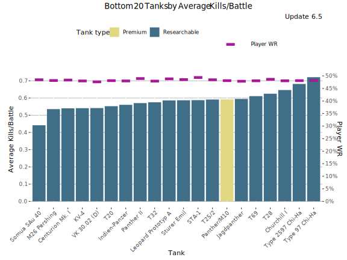
Lowest Average Kills/Battle - Table
Average WR denotes average WR in a tank across all the players during the update. Player WR denotes the tank’s players’ average WR across all the tanks during the update.
| Tank | Average Kills/Battle | Average WR | Player WR | Players | Battles/Player | Tank type |
|---|---|---|---|---|---|---|
| Centurion Mk. I | 0.58 | 46.4% | 49.1% | 1 089 | 62 | Researchable |
| Indien-Panzer | 0.58 | 46.6% | 48.3% | 851 | 59 | Researchable |
| VK 30.02 (D) | 0.55 | 46.6% | 48% | 426 | 52 | Researchable |
| M26 Pershing | 0.56 | 47.1% | 48.7% | 915 | 63 | Researchable |
| T69 | 0.63 | 47.1% | 48.4% | 1 194 | 68 | Researchable |
| Panther II | 0.60 | 47.2% | 49.5% | 1 431 | 68 | Researchable |
| T28 | 0.65 | 47.2% | 48.8% | 527 | 68 | Researchable |
| KV-4 | 0.56 | 47.4% | 48.3% | 2 036 | 69 | Researchable |
| Panther/M10 | 0.61 | 47.6% | 48.7% | 465 | 77 | Premium |
| T25/2 | 0.62 | 47.7% | 49.1% | 1 592 | 60 | Researchable |
| T20 | 0.58 | 47.7% | 48.8% | 863 | 63 | Researchable |
| STA-1 | 0.62 | 47.7% | 50.2% | 942 | 66 | Researchable |
| Jagdpanther | 0.62 | 47.8% | 48.5% | 2 074 | 58 | Researchable |
| T32 | 0.60 | 47.8% | 48.5% | 1 229 | 63 | Researchable |
| Challenger | 0.61 | 48% | 49.9% | 1 984 | 51 | Researchable |
| IS-2 | 0.65 | 48.1% | 49.9% | 913 | 57 | Researchable |
| Leopard Prototyp A | 0.62 | 48.1% | 49.5% | 2 539 | 76 | Researchable |
| Sturer Emil | 0.62 | 48.2% | 49.2% | 2 662 | 69 | Researchable |
| SU-101 | 0.69 | 48.3% | 50.3% | 1 064 | 64 | Researchable |
| VK 45.02 (P) Ausf. A | 0.63 | 48.3% | 48.7% | 1 236 | 61 | Researchable |
Lowest Spot Rate
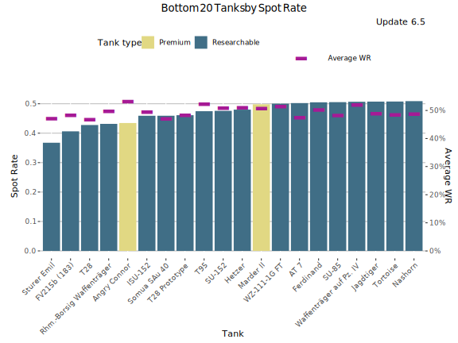
Lowest Spot Rate - Table
| Tank | Spot Rate | Average WR | Player WR | Players | Battles/Player | Tank type |
|---|---|---|---|---|---|---|
| Sturer Emil | 0.38 | 48.2% | 49.2% | 2 662 | 69 | Researchable |
| Angry Connor | 0.40 | 53.9% | 52.4% | 437 | 73 | Premium |
| FV215b (183) | 0.41 | 48.5% | 52.4% | 8 871 | 80 | Researchable |
| T28 | 0.44 | 47.2% | 48.8% | 527 | 68 | Researchable |
| Rhm.-Borsig Waffenträger | 0.44 | 50.2% | 51% | 9 292 | 86 | Researchable |
| Somua SAu 40 | 0.45 | 48.8% | 50.1% | 463 | 26 | Researchable |
| Hetzer | 0.45 | 53.3% | 49.2% | 1 424 | 53 | Researchable |
| T28 Prototype | 0.46 | 48.9% | 49.5% | 1 751 | 69 | Researchable |
| T95 | 0.47 | 52.5% | 50.5% | 866 | 89 | Researchable |
| ISU-152 | 0.47 | 50.3% | 50.8% | 8 263 | 82 | Researchable |
| SU-152 | 0.49 | 51.7% | 51% | 8 339 | 79 | Researchable |
| SU-85 | 0.49 | 49.4% | 48.8% | 1 942 | 51 | Researchable |
| AT 8 | 0.50 | 48.5% | 48.5% | 877 | 50 | Researchable |
| AT 7 | 0.50 | 48.3% | 48.6% | 594 | 58 | Researchable |
| Tortoise | 0.51 | 48.9% | 48.9% | 1 098 | 90 | Researchable |
| WZ-111-1G FT | 0.51 | 51.8% | 51% | 1 265 | 64 | Researchable |
| S35 CA | 0.51 | 53.8% | 50.8% | 1 444 | 49 | Researchable |
| AT 15 | 0.51 | 48.9% | 48.6% | 934 | 74 | Researchable |
| Jagdtiger | 0.51 | 49.4% | 49.2% | 2 172 | 72 | Researchable |
| Waffenträger auf Pz. IV | 0.51 | 52.4% | 52% | 11 955 | 112 | Researchable |
Lowest Hit Rate
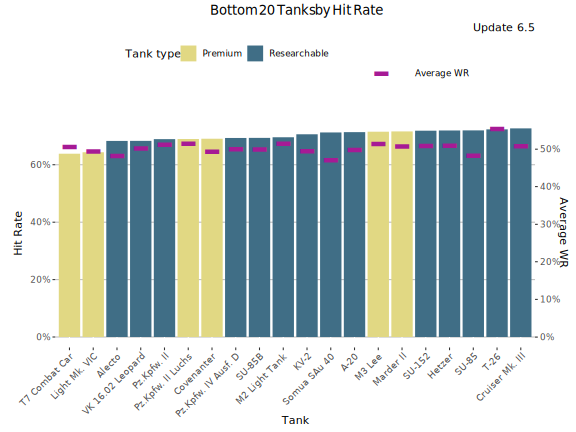
Lowest Hit Rate - Table
| Tank | Hit Rate | Average WR | Player WR | Players | Battles/Player | Tank type |
|---|---|---|---|---|---|---|
| VK 16.02 Leopard | 69.1% | 52.3% | 50% | 9 118 | 71 | Researchable |
| Alecto | 70.1% | 50.8% | 48.4% | 750 | 33 | Researchable |
| KV-2 | 71.3% | 50.5% | 50.2% | 9 011 | 76 | Researchable |
| Pz.Kpfw. IV Ausf. D | 71.7% | 52.1% | 48.7% | 1 879 | 41 | Researchable |
| SU-152 | 71.9% | 51.7% | 51% | 8 339 | 79 | Researchable |
| SU-85B | 72.3% | 50.9% | 48.6% | 823 | 41 | Researchable |
| A-20 | 72.7% | 51.1% | 48.2% | 1 186 | 47 | Researchable |
| Pz.Kpfw. II | 72.9% | 53% | 48.8% | 563 | 38 | Researchable |
| SU-85 | 73% | 49.4% | 48.8% | 1 942 | 51 | Researchable |
| Nightmare | 73.5% | 51.9% | 49.8% | 6 226 | 59 | Premium |
| Angry Connor | 73.6% | 53.9% | 52.4% | 437 | 73 | Premium |
| SU-100 | 74.1% | 52% | 50% | 4 359 | 66 | Researchable |
| Somua SAu 40 | 74.2% | 48.8% | 50.1% | 463 | 26 | Researchable |
| ISU-122S | 74.4% | 51.2% | 50.7% | 402 | 47 | Premium |
| SU-85I | 74.4% | 52.6% | 49.6% | 664 | 64 | Premium |
| ISU-152 | 74.4% | 50.3% | 50.8% | 8 263 | 82 | Researchable |
| Hetzer | 74.7% | 53.3% | 49.2% | 1 424 | 53 | Researchable |
| T-34-2G FT | 74.8% | 50.6% | 50.6% | 1 272 | 54 | Researchable |
| ARL V39 | 74.8% | 49.7% | 50.7% | 1 134 | 52 | Researchable |
| Lago | 75% | 52.2% | 49.1% | 2 564 | 29 | Researchable |
Least Popular Tanks
This graph shows the least popular tanks by the number of players during the update 6.5. The graph includes also unreleased tanks in super-testing.
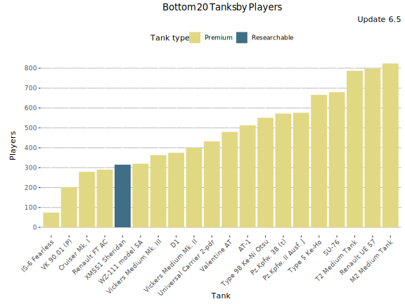
Least Played Tanks - Table
| Tank | Players | Average WR | Battles/Player | Tank type |
|---|---|---|---|---|
| IS-6 Fearless | 72 | 64% | 4 | Premium |
| VK 90.01 (P) | 190 | 58.8% | 22 | Premium |
| Renault FT AC | 195 | 51.1% | 4 | Premium |
| Vickers Medium Mk. III | 227 | 52.7% | 6 | Premium |
| Cruiser Mk. I | 230 | 56.2% | 4 | Premium |
| D1 | 233 | 56.6% | 9 | Premium |
| Vickers Medium Mk. II | 235 | 52.9% | 5 | Premium |
| XM551 Sheridan | 291 | 64.1% | 127 | Researchable |
| WZ-111 model 5A | 292 | 62.5% | 39 | Premium |
| Universal Carrier 2-pdr | 310 | 54.7% | 8 | Premium |
| Valentine AT | 343 | 53.7% | 8 | Premium |
| AT-1 | 351 | 53.3% | 5 | Premium |
| T2 Medium Tank | 374 | 51.7% | 10 | Premium |
| Pz.Kpfw. 38 (t) | 399 | 51.7% | 6 | Premium |
| M2 Medium Tank | 455 | 49.5% | 23 | Premium |
| SU-76 | 465 | 50.2% | 6 | Premium |
| Pz.Kpfw. II Ausf. J | 491 | 54.3% | 5 | Premium |
| Type 98 Ke-Ni Otsu | 526 | 66.4% | 25 | Premium |
| Type 5 Ke-Ho | 552 | 62.2% | 8 | Premium |
| Panzerjäger I | 593 | 58% | 16 | Premium |
Least played tanks
This graph shows the most played tanks by number of battles during the update 6.5.
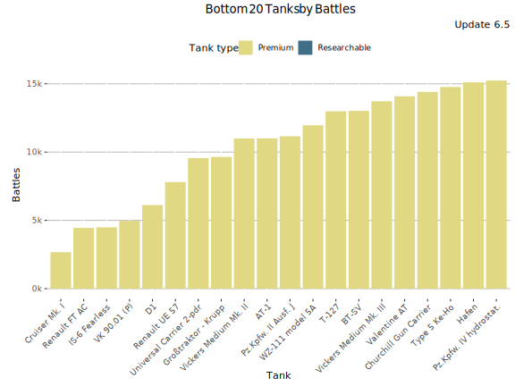
Least Played Tanks - Table
| Tank | Battles | Average WR | Players | Battles/Player | Tank type |
|---|---|---|---|---|---|
| IS-6 Fearless | 255 | 64% | 72 | 4 | Premium |
| Renault FT AC | 754 | 51.1% | 195 | 4 | Premium |
| Cruiser Mk. I | 847 | 56.2% | 230 | 4 | Premium |
| Vickers Medium Mk. II | 1 163 | 52.9% | 235 | 5 | Premium |
| Vickers Medium Mk. III | 1 411 | 52.7% | 227 | 6 | Premium |
| AT-1 | 1 778 | 53.3% | 351 | 5 | Premium |
| Renault UE 57 | 2 090 | 54% | 636 | 3 | Premium |
| D1 | 2 119 | 56.6% | 233 | 9 | Premium |
| Pz.Kpfw. 38 (t) | 2 295 | 51.7% | 399 | 6 | Premium |
| Universal Carrier 2-pdr | 2 466 | 54.7% | 310 | 8 | Premium |
| Pz.Kpfw. IV Ausf. A | 2 541 | 49.5% | 680 | 4 | Premium |
| SU-76 | 2 567 | 50.2% | 465 | 6 | Premium |
| Pz.Kpfw. II Ausf. J | 2 657 | 54.3% | 491 | 5 | Premium |
| Valentine AT | 2 712 | 53.7% | 343 | 8 | Premium |
| T2 Medium Tank | 3 629 | 51.7% | 374 | 10 | Premium |
| T-127 | 3 777 | 57.2% | 750 | 5 | Premium |
| BT-SV | 3 797 | 54.3% | 805 | 5 | Premium |
| Großtraktor - Krupp | 3 897 | 55% | 1 035 | 4 | Premium |
| Pz.Kpfw. IV hydrostat. | 3 956 | 54.3% | 676 | 6 | Premium |
| LTP | 4 098 | 50.7% | 987 | 4 | Premium |
-

This work is licensed under a Creative Commons Attribution-ShareAlike 4.0 International License.
-

-

Blitzanalysiz() is a player-created website for World of Tanks: Blitz and developed in accordance with WG DPP. This site is not an official Wargaming or World of Tanks: Blitz website. World of Tanks Blitz and Wargaming are trademarks of Wargaming.net Limited. Game content and materials copyright © Wargaming.net. All rights reserved.